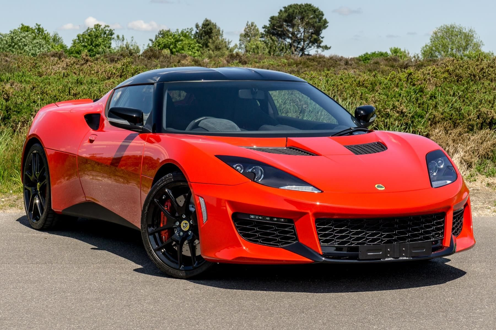

My name is Coleman McBride and I am an Automotive Engineering Technology Major at Brigham Young University-Idaho. This webpage is meant to be an educational resource for those looking to learn more about cars, from the history, to maybe finding a vehicle that fits their style.
Automobiles as we know them have existed for nearly 140 years, starting with the Benz Patent-Motorwagen. Learn more about how cars have changed and transformed over the years.


What car is right for you? Learn more about the different styles of cars that exist, their pros and cons, and find out which type of car fits you best!

I am an Automotive Engineering Technology major at Brigham Young University- Idaho, currently in my Sophomore year. I grew up in Elizabethtown, Pennsylvania, where I had five siblings and two wonderful parents. My fiance, Shay, and I will be married later this summer.
My love for cars began on a family vacation, where my cousins and I
would guess the car brand of an approaching vehicle. Ever since then,
I've enjoyed spotting and identifying cars on the road and researching
the newest models as they are released. I've also attended a number of
motor shows, including the Harrisburg Auto Show, Corvettes at Carlisle,
and Chrysler Nationals. I'm a proud owner of a 2010 Volvo XC70, and my
dream car is a Lotus Evora 400.
